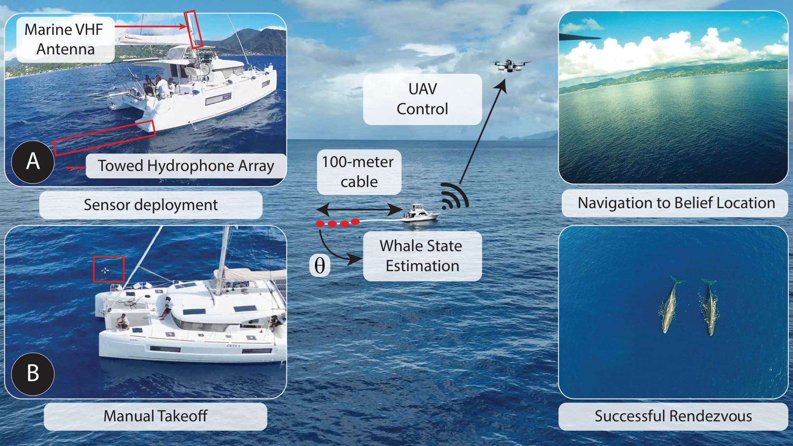
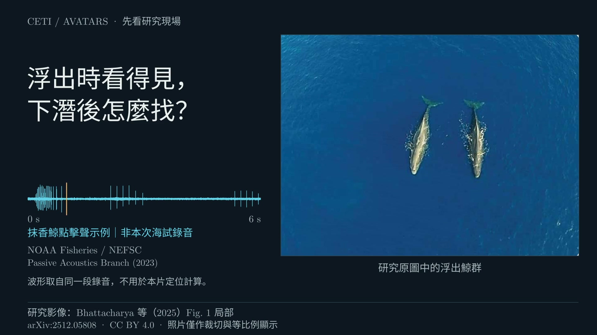

A 群先出現可能浮出的線索
第一場海試優先前往最先停止發聲滿一分鐘的鯨群。動畫以 A 群示意：A 已一分鐘沒有新叫聲，B、C 還在發聲。
人員據此推測 A 可能已浮出，選擇前往觀察；是否真的在水面，仍要由人員確認。
第一場海試 §3.1.2抹香鯨長時間待在水下，研究人員能在海面觀察牠們的時間有限。多米尼克外海的團隊讓船拖著水聽器陣列接收鯨叫，但光知道聲音的來向，還無法指定一個位置：同一群鯨可能在陣列的任一側。
研究人員移動船隻，讓同一條陣列換個位置接收聲音，逐步更新估計。接著還得判斷哪一群可能已浮出水面，選好航點、讓無人機前往；是否真的找到鯨，最後由人員確認。
這項研究用聲音幫忙找鯨，讓研究人員有機會近距離觀察鯨群，並沒有自動解析鯨語。
模型幫忙估計位置。海試中，研究人員負責操船、選擇要前往的地方，也要確認是否看見鯨群。
船後拖著四個排成一列的水聽器，接收鯨發出的叫聲。這是被動接收，沒有向外發射搜尋聲波。陣列約在船後 100 公尺，這是拖曳距離，不是水深。§2.1
模型依聲音傳來的方向分群，使用的是高斯混合模型（GMM）。估計其中一群的位置時，單次觀測仍可能對應陣列左右兩側。粒子濾波（PF）保留這些可能位置，起始距離則參考船到上次目擊下潛處的約略距離。動畫中的兩團粒子，都在表示同一群鯨可能在哪裡。§2.2
人員操船移動、轉向，讓同一條陣列從另一個位置接收叫聲。原本左右都說得通的位置，遇到新的方向觀測後，可能不再一樣合理。模型用新的來向與訊號振幅，更新各候選位置的相對可能性。
研究人員參考叫聲是否持續與位置估計，選定航點並操控無人機起飛。升至 30 公尺後，無人機才自主飛向估計航點。飛行過程中，無人機操作人員也會確認是否看見鯨。§3.1

聽到鯨叫後，研究人員還有兩個判斷：前往哪一群，以及先到哪個位置找。

按播放開始，片頭 1.5–7.5 秒有 NOAA 點擊聲示例；方法核心與片尾無聲。可用影片音量鍵切換靜音。
尚未播放。65.55 秒；可在本頁放大觀看，音量與瀏覽器全螢幕仍可用影片原生控制列。
影片無法載入，請閱讀完整文字版。
65.55 秒混合影片。片頭與片尾使用 Bhattacharya 等（2025）的圖 1 研究照片（CC BY 4.0）。中段的位置、波形與 A／B／C 群名是教學示意，照片中的鯨群不對應 A／B／C。NOAA 點擊聲另取自教學錄音，並非照片或海試的同步聲音，也沒有參與定位計算。
10–57.55 秒完整保留 v05 方法示意。A／B／C 名稱、核心波形、粒子、船位與距離都是教學示意，時間經過壓縮，未重播海試資料或估計水下深度。素材來源與使用說明／影片來源紀錄
第一場海試優先前往最先停止發聲滿一分鐘的鯨群。動畫以 A 群示意：A 已一分鐘沒有新叫聲，B、C 還在發聲。
人員據此推測 A 可能已浮出，選擇前往觀察；是否真的在水面，仍要由人員確認。
第一場海試 §3.1.2另一種情況是，粒子估計尚未收斂，仍有多個可能位置。論文記錄的備用做法，是從可能已浮出鯨群的位置候選中，先查看較近的一處。
不能認定第一場海試必然用過這個做法，也不是每次都接在「無聲一分鐘」之後。
海試設定 §3.1.1片頭使用 Bhattacharya 等（2025）圖 1 中的鯨群、船與拖曳水聽器陣列照片。照片中的鯨群不對應後段示意動畫的 A、B 或 C 群。
1.5–7.5 秒的點擊聲取自 NOAA Fisheries／NEFSC／Passive Acoustics Branch 的獨立教學錄音，引用年份為 2023，實際錄音日期未確認。這不是照片或本研究海試的同步音軌，也未用於位置估計。音訊來源與使用界線
船拖著一條由四個水聽器組成的線性陣列，被動接收抹香鯨的叫聲，不向外發射搜尋聲波。GMM 依聲音來向分群。影片先以 A 群示範如何估計位置，此時研究人員尚未決定要前往哪一群。
估計同一群鯨的位置時，單次方向觀測仍可能對應陣列左右兩側。PF 以船到上次目擊下潛處的約略距離作為起始估計，保留兩側可能的位置。兩團粒子都在表示同一群鯨可能在哪裡，不是兩群鯨。
研究人員操船轉向，讓同一條陣列在新位置接收鯨叫。原本左右都說得通的位置，在新的方向觀測下可能不再一樣合理。原研究用新的聲音來向與振幅更新位置估計；影片只示範簡化的方向更新，沒有計算振幅。新的觀測也不保證每次都縮小候選範圍。
這段示範第一場海試如何選擇要前往的鯨群。研究人員暫時收不到 A 的新叫聲，便開始計時；B、C 仍在發聲。A 最先滿一分鐘沒有新叫聲，人員因而推測牠們可能已浮出，優先前往。A／B／C 名稱、波形與壓縮後的計時都只是示意。
影片另示範位置估計尚未收斂的情況：從可能已浮出鯨群的位置候選中，比較與起飛位置的距離，先查看較近的一處。這是另一種情況，不表示前一段定位一定失敗，也不能據此認定第一場海試用過這個做法，或每次都接在「無聲一分鐘」之後。
人員選好估計航點，操控無人機起飛；升至 30 公尺後，再由無人機自主飛往航點。影片中的高度沒有按實際比例繪製，到達航點也還不能確認鯨就在那裡。
人員看見鯨群後，才能確認實際位置、取得用來比對的真值。影片只解說流程，沒有執行原研究完整的 GMM、PF 或 RL，也沒有求出鯨在水下的三維座標。
片尾再呈現作者研究照片中的浮出鯨群。照片與核心示意是不同來源，不能把照片中的鯨群當成動畫選定的目標；這次沒有新增鯨群定位或實測結果。
海試顯示，位置估計能引導無人機前往鯨群附近。不過，能拿來核對誤差的只有兩次會合。
模型提供位置估計，研究人員再參考叫聲是否持續，選擇前往的鯨群與航點。海試由人員操控無人機起飛，升至 30 公尺後自主飛往航點，最後仍由人員確認是否看見鯨。
研究人員希望藉此增加近距離觀察的機會，再把估計位置與實際找到的鯨位置比較，計算會合誤差。
多米尼克海試的五次會合嘗試中，兩次取得實際鯨位置，可用來核對會合誤差，約為 187 公尺與118 公尺，均在 200 公尺內。海試結果 §3.1
另外三次缺少可核對的實際鯨位置，不能直接算成失敗，也無法據此計算五次嘗試的整體成功率。模擬得到的成功率，要與海試結果分開看。
Bhattacharya et al.（2025）
Real-time Remote Tracking and Autonomous Planning for Whale Rendezvous using Robots
以下保留案例資料庫原文；正文另補充選群、選點的做法，以及海試實際驗證的內容。
水下抹香鯨主視覺由 AI 生成，用來呈現情境，並非研究實拍，也不是聲學系統確認的鯨位置。設備圖取自原論文，ManimGX 方法影片則用教學示意解說流程。